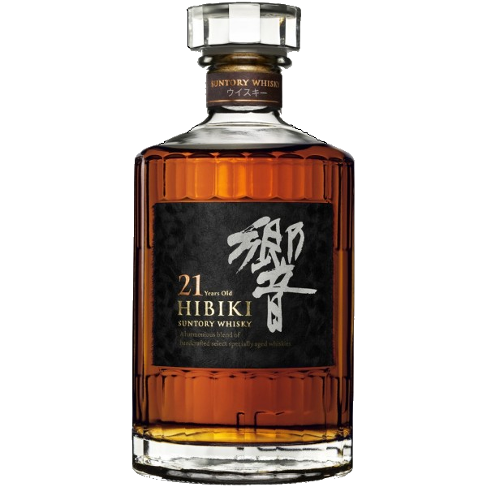
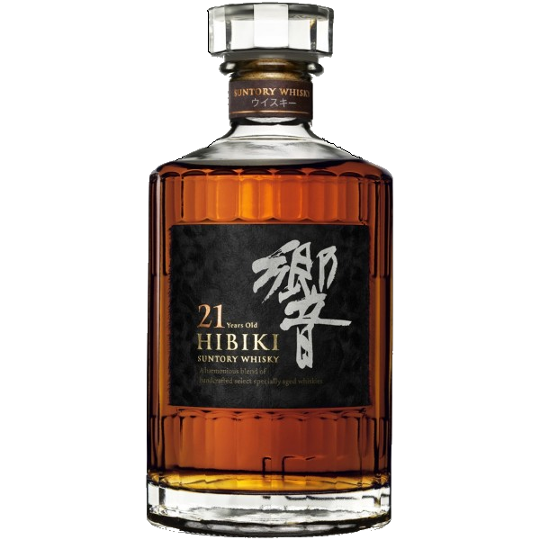

La cuisine japonaise se caractérise par la présence très forte de la saveur « umami », procurée par la sauce soja, les crustacés, les champignons, le chou chinois, et elle est le plus souvent constituée de poissons, de riz, de nouilles, d’algues et de légumes, assaisonnés avec des condiments locaux. En outre, pour la préparation des plats, les aliments sont découpés de façon à être saisis par les baguettes, que ce soit en dés, en demi-lunes, en rondelles, en copeaux, en lanières ou en lamelles. La viande a fait tardivement son entrée dans la cuisine japonaise, et on la consomme surtout sous forme de brochettes, de poulet le plus souvent, mais aussi de bœuf et de porc. Les pâtisseries sont souvent à base de pâte de haricots rouges sucrés, ou de pâte de riz. On mange aussi en fin de repas des fruits comme le kaki, la poire japonaise, la prune, la noix de ginkgo, le yuzu (sorte de citron), les châtaignes.
Il existe des marques d'eau locale, comme Finé. Le thé: c'est la boisson traditionnelle, on le sert chaud ou froid. La bière: on trouve 4 grandes marques au Japon, Asahi, Kirin, Sapporo et Suntory, des blondes plutôt agréables. Le saké: alcool de riz, très populaire. Le whisky japonais: copié sur son modèle écossais, il remporte aujourd'hui de belles récompenses dans les concours internationaux. Les japonais font également de l' eau de vie comme le Shochu (distillée à base d'un grand nombre d'ingrédients, dont les principaux sont le riz, l'orge, et la patate douce) ou l'awamori (ancêtre du Shochu et distillé à partir de riz fermenté).
 
